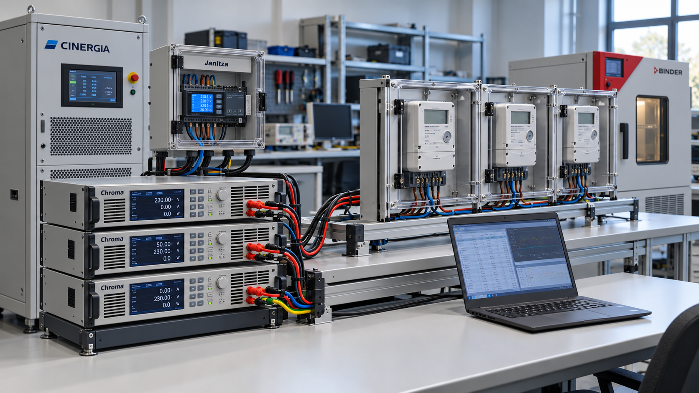

Technische Fragestellung
Leistungsquelle, Lasten und unterschiedliche Messgeräte benötigen abgestimmte Steuerungs- und Datenerfassungsabläufe.

KI-generiertes SymbolbildMethodischer Ablauf
- 01Python / Node-RED
- 02Gerätekommunikation
- 03Prüf- und Messgeräte
- 04MySQL / InfluxDB
- 05Auswertung & Bericht
Ergebnisse & Arbeitsprodukte
Konzeption und Integration eines Prüflabors mit Leistungsquelle, elektronischen Lasten, Referenzmesstechnik, Tarifzählern und Klimaprüftechnik.
Abgrenzung der Darstellung
Die Abbildungen sind vereinfachte schematische Darstellungen. Sie ersetzen keine Messdaten, Sicherheitsbewertung oder vollständige technische Dokumentation.